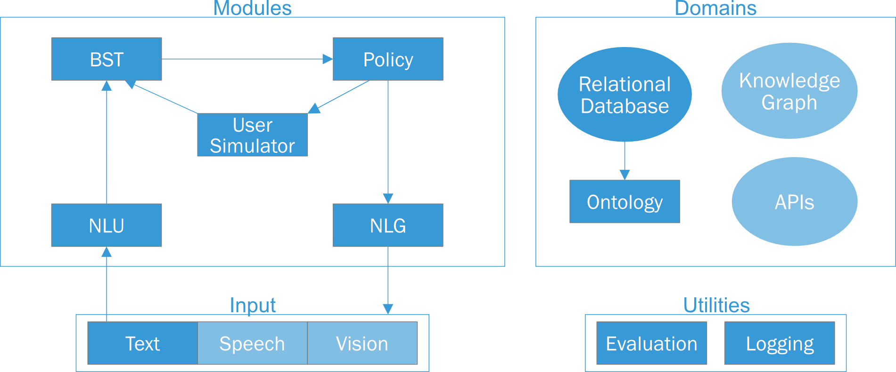

General Information¶
Who contributed to ADvISER?¶
Daniel Ortega
Dirk Väth
Gianna Weber
Lindsey Vanderlyn
Maximilian Schmidt
Moritz Völkel
Zorica Kacarevic
Ngoc Thang Vu
Who can I contact in case of problems or questions?¶
You can ask questions by sending emails to adviser-support@ims.uni-stuttgart.de
You can also post bug reports and feature requests (only) in GitHub issues. Make sure to read our guidelines first.
What is the main purpose of ADvISER?¶
ADVISER is an open source dialog system framework for education and research purposes. This system supports multi-domain task-oriented conversations in English and German. It additionally provides a flexible architecture in which modules can be arbitrarily combined or exchanged - allowing for easy switching between rules-based and neural network based implementations. Furthermore, ADVISER offers a transparent, user-friendly framework designed for interdisciplinary collaboration: from a flexible back end, allowing easy integration of new features, to an intuitive graphical user interface supporting non-technical users.
Why should I use ADvISER?¶
Modularity
For each module in a classic dialog system pipeline (NLU, BST, dialog policy and NLG), we provide a handcrafted baseline module, additionally we provide a machine learning based implementation for the BST and policy. These can be used to quickly assemble a working dialog system or as implementation guidelines for custom modules. Additionally, because all modules inherit from the same abstract class, technical users can also easily write their own implementations or combinations of modules.
Flexibility
In contrast to a more static dialog system pipeline, we propose a graph structure where the user is in control of the modules and their order. This level of control allows users to realise anything from pipelines to end-to-end systems. Even branching scenarios are possible as demonstrated by our meta policy which combines multiple parallel subgraphs into a single dialog.
Transparency
Inputs to and outputs from each module are captured by automatically generated XML interface descriptions, providing a transparent view of data flow through the dialog system.
User-friendliness
Technical users have the full flexibility to explore and extend the back end; non-technical users can use our defined modules for building systems; students from different disciplines could easily learn the concepts and explore human machine interaction.
Can I contribute to the project?¶
You can post bug reports and feature requests (only) in GitHub issues. You can find the code to ADvISER in our Git repository. Make sure to read our guidelines first.
Information about the download can be found here.
System Specific Information¶
Are there coding guidelines?¶
The default coding guidelines for this project are the official pep8 https://www.python.org/dev/peps/pep-0008/ rules.
More specifically:
Import adviser modules from corresponding subpackages (e.g. from modules.bst import HandcraftedBST)
Import directly from utils, e.g. from utils import SysAct
Module names w/ underscore
Method names w/ underscore (mark private functions with leading underscore)
Descriptive preferred over shorter var names
Var names w/ underscore
Line length 99 characters
Always use type hints: List, Dict, Optional, ..
Prioritize readability (shorter methods < 20 lines if possible)
Before checking in your code, please make sure that your code follows these guidelines.
Most likely your IDE (e.g. PyCharm) or editor of choice (e.g. Visual Studio Code with the Python plugin) will check these rules automatically and report any violations as warnings.
If not, you can install pep8 by executing:
pip install pep8
and check your code with calling:
pep8 yourfilename.py
(replace ‘yourfilename’ with the file you want to check).
To check multiple files at once, you can execute:
pep8 .
in the top level directory of the repository (this will check all *.py files in the subdirectories as well)
For more options, see:
pep8 --help
How can I test new modules?¶
The pytest framework makes it easy to write small tests, yet scales to support complex functional testing for applications and libraries.
PyTest should be installed, not built-in:
pip install -U pytest
For more details see the official pytest documentation https://docs.pytest.org/en/latest/getting-started.html
Example:
# content of test_sample.py
def func(x):
return x + 1
def test_answer():
assert func(3) == 5
If you need to set global variables, use the following fixture with autouse:
import pytest
@pytest.fixture(scope="session", autouse=True)
def execute_before_any_test():
global myvar
myvar = 5
You can also do other stuff there as this function will be called from pytest before any test.
Run in a terminal from the root folder of adviser the following command:
python3 -m pytest <optional.py>
pytest makes auto discover if no python file is given, it finds functions in python files that contain with :ref:’test’
What are the main features of the system’s framework?¶
Which User Actions and System Actions are currently supported by the system?¶
User Actions currently supported by ADvISER are:
Inform = ‘inform’
NegativeInform = ‘negativeinform’
Request = ‘request’
Hello = ‘hello’
Bye = ‘bye’
Thanks = ‘thanks’
Affirm = ‘affirm’
RequestAlternatives = ‘reqalts’
Ack = ‘ack’
Restart = ‘restart’
Bad = ‘bad’
Confirm = ‘confirm’
System Actions currently supported by ADvISER are:
Welcome = ‘welcomemsg’
Inform = ‘inform’
InformByName = ‘inform_byname’
InformByAlternatives = ‘inform_alternatives’
Request = ‘request’
Confirm = ‘confirm’
Select = ‘select’
RequestMore = ‘reqmore’
Bad = ‘bad’
Bye = ‘closingmsg’
ConfirmRequest = ‘confreq’
Restart = ‘restart’
Which domains are currently supported by ADvISER?¶
ADvISER currently supports the following domains:
IMS Lecturers
Providing information about lecturers teaching at the IMS (for privacy reasons, our database includes fictive information about lecturers and related contact information, however, it serves as an example for a real-world application).
IMS Courses
Providing information about courses offered at the IMS, e.g. course content, requirements, or locational information.